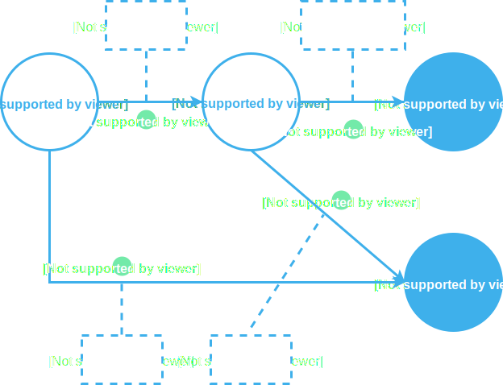
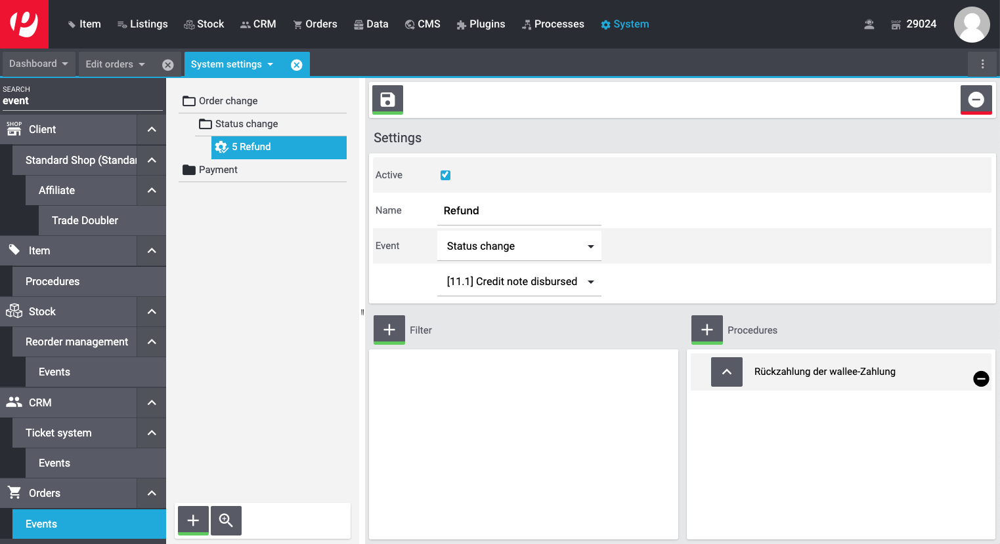

wallee plentymarkets
Documentation
1Prerequisites
2Installation
-
Install the plugin directly from the plentyMarketplace or via GitHub. Check out plentyKnowledge on how to install plugins.
NoteThe advantage of installing the plugin via the github is that this version will always be up to date. The release pipeline through the official plentymarkets pipeline is generally slower. -
Log in to the backend of your plentymarkets store.
-
Navigate to Plugins. Search for the 'Not installed plugins' and click on the
Installbutton of the plugin to install it. -
Activate the wallee Payment plugin using the 'Active/Not active' button.
NoteIn case you need to update the plugin, see our FAQ about the update process.
3Configuration
-
Navigate to Plugins > Installed plugins in your plentymarkets backend, click on the plugin to open the configuration and enter the wallee Space ID, User ID and Authentication Key that you can create in the setup assistant. Alternatively, you can manually create an application user.
If your store is configured for multishop, you may use different spaces for each store to configure different behaviours.
-
Optionally disable downloading invoice and packing slip. These settings allow customers to download the documents from their order overview in the plentymarkets frontend.
-
After saving the configuration necessary webhooks are set up.
|
Note
|
Please note that state changes take time as plentymarkets is updating the order state every 15 mins only. |
-
Activate the payment methods that you want to use.
-
In case the payment methods are not visible in the checkout make sure that you enable the payment methods for your customer groups.
The main configuration is now finished. You should see the payment methods in your checkout. To view the payment methods configuration in the backend of plentymarkets go to Plugins > wallee.
4Payment method configuration
4.1Setup
Once you have added the payment methods and connectors in your wallee space, you simply need to activate them in your plentymarkets store backend under Plugins > wallee.
4.2Customization
Due to limitations in Plentymarkets, the payment method icons are unable to be updated
5State graph
The Payment Process of wallee is completely standardized for every payment method you can process. This gives you the ability to simply add a payment method or processor without changes inside of your plentymarkets configuration. An overview about the states and the payment processes of wallee can be found in the Payment Documentation.
In the following section we provide you an overview about how the wallee states are mapped into the plentymarkets State graph for orders and payment states.
5.1State mapping of plentymarkets orders
Below you find a diagram that shows the state machine of plentymarkets for orders including additional information for the state transitions.
-
If the transaction is
pendingorauthorizedin wallee, the plentymarkets order is marked as[3] Waiting for payment. Please note that the state changes can take up to 15 mins as plentymarkets is fechting the orders in this interval. -
If the transaction fails during the authorization process, the plentymarkets order is either marked as
[8] Canceled. -
If the transaction in wallee is marked as
fulfill, the plentymarkets order is marked as[5] Cleared for shipping, indicating that it can now be fulfilled. -
If the transaction’s authorization is voided or the risk assessments indicate that the order should not be fulfilled, the order is marked as
[5] Canceled.
5.1.1General remarks regarding order statuses
We recommend that you only change the order status to indicate that shipping has taken place. If you change it before the transaction has reached a final state in wallee, the plugin may changed the order status again. If you want different order statuses to be set, you can change the behaviour in the plugin configuration.
5.2State mapping of plentymarkets payment status
Below you find a diagram that shows the state machine of plentymarkets for payment status including additional information for the state transitions.

-
If the transaction in wallee is
authorized, the payment status of the plentymarkets order is set toawaiting confirmation. -
If the transaction fails during the authorization process, the payment status of the plentymarkets order is set to
canceled. -
If the transaction’s authorization is voided, the payment status of the plentymarkets order is set to
canceled. -
Once the invoice is paid, the payment status of the plentymarkets order is set to
Confirmed. This also applies if the invoice is not traceable due to external administration.
6Transaction management
6.1Refund of a transaction
This requires to set the status ID for refunds in the plentymarkets shop configuration. Once the order is moved into that status the refund will be triggered and synchronized with wallee.
In order to do so please follow the steps below in the backend of your plentymarkets store:
First you have to create an Event procedure for a status change. This can be done under System settings > Orders > Events:
-
There you can create an event using the + button, give it a name and select the status change that should trigger the action (in our example below
[11.1] Credit note disbursed). -
Within this event, you should then create a procedure and select the action under the folder Plugins where you should find an action called
Refund of the wallee payment. -
Store the configuration using the save button.

Once this is done, you can either create a return or a credit note for your orders following the below steps:
-
Open the order and select the action either create a return or a credit note.
-
Select the products for which you want to do a return or a credit note.
-
By clicking on the save button it will create a return/credit note for your order.
-
Move the status of the return/credit note into the state that you have configured in the event procedure as explained above. This will now automatically synchronize the refund with wallee.

7Email Setup
As an order is being created in plentymarkets before the customer is redirected to the payment page, the order confirmation email should not be sent at the moment of the order creation. This should be done using an Event procedure that will automatically trigger the confirmation email once the order is fulfilled.
In order to do so please follow the steps below in the backend of your plentymarkets store:
First you have to deactivate the automatic email for order creation. This can be done under System settings > Standard Shop > Email > Automatic: There you should set New order from online store to do not send.

Once this is done, you should create an Event procedure for payment. This can be done under System settings > Orders > Events:
-
There you can create an event using the + button and select the event Payment > Complete.
-
Within this event, you should create a filter for the wallee payment methods.
-
You should also create a procedure, select the action under the folder Customer where you should find an action called
Send emailand add the email templateOrder: Incoming payment complete.

8FAQ
8.1How can I update the wallee plugin in my store?
To update the plugin in your plentymarkets store, simply follow the below steps:
-
Press the update button in your plentymarkets store backend under Plugins > wallee.
-
Save and publish the plugin set.
8.2How to prevent PayPal payments processed through wallee from being registered twice?
You can configure the plentymarkets PayPal import to ignore wallee payments.
-
In the plentymarkets store backend, navigate to Setup > Orders > Payment > Incoming.
-
Set Ignore wallee PayPal transactions to Yes.
9Support
If you need help, feel free to contact our support.